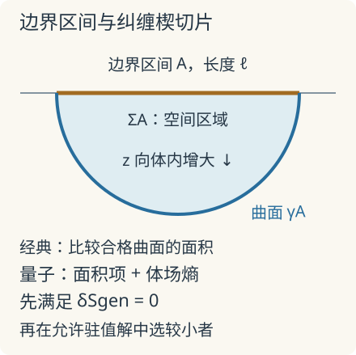

本页目录
前沿物理 III · 全息量子信息：纠缠楔、极值曲面与岛屿
先修：密度矩阵与纠缠、黑洞与因果结构、量子引力了望塔。本讲进入可计算机制：边界熵怎样关联几何，辐射熵为何需要竞争的极值解，以及这些结果还没有证明什么。文献核查截至 2026-09-08。
黑洞消失后，辐射还能与谁纠缠？
1. 先得到一个不含引力的约束
设封闭系统整体为纯态，把自由度分成辐射 \(R\) 与剩余黑洞 \(B\)。Schmidt 分解使两边的非零密度矩阵本征值相同，因此
若最终黑洞自由度完全消失、没有残余物或其他被忽略系统，则 \(d_B=1\)，辐射整体必须回到纯态，\(S(R)=0\)。这里的熵是辐射全体的精细熵；单个小辐射片段仍可近似热态，两者不矛盾。
课堂示意把总维数固定为 \(2^{12}\)，令 \(d_R=2^r,d_B=2^{12-r}\)，用 \(S_{\rm sketch}=\min(r,12-r)\) bit 描述先升后降的容量。它不是任意纯态都饱和的定理：乘积态在任何分割下都可为零。
先预测：\(r\) 从 5 增到 8 时，较小子系统换成了哪边？图中熵下降是否表示整个封闭系统失去信息？
静态后备：\(r=0,3,6,9,12\) 时，示意值为 \(0,3,6,3,0\) bit。这里直接取两个对数维数的较小者，不生成 Hawking 辐射，不求极值曲面，也不计算岛屿。真正 Haar 随机纯态的平均子系统熵有有限维修正；例如 \(d_R=d_B=2\) 时，平均为 \(1/(3\ln2)\) bit，低于容量上界 1 bit。Page 的原始提出、Sen 的证明
2. 一段边界的熵，怎样由一条体内曲线算出？
AdS/CFT 在规定理论中把边界量子场论与体内引力联系起来。静态、经典引力近似下，Ryu–Takayanagi 公式把区域 \(A\) 的熵对应到锚定在 \(\partial A\)、并与 \(A\) 满足同调条件的最小曲面：
以下设光速为 1，熵用自然对数、单位 nat；与实验台的 bit 相差 \(\ln2\)。这是一项有大量理论检验、并在适用极限下得到推导的全息关系，不是对任何材料或真实宇宙均已实验确证的定律。Ryu–Takayanagi，2006-02-28 提交
可算例子是 \(\mathrm{AdS}_3\) 的固定时间切片：
边界位于 \(z\to0\)。长度为 \(\ell\) 的边界区间对应半径 \(R=\ell/2\) 的半圆测地线。写 \(x=R\cos\phi,z=R\sin\phi\)，则 \(ds=L_{\rm AdS}d\phi/\sin\phi\)。用短距离截断 \(z=\epsilon\) 避开边界发散，积分得
\(c_{\rm CFT}\) 是边界理论的中心荷，不是光速。几何中的靠近边界部分，对应场论的短程纠缠；截断依赖要保留，不能把发散熵当作有限实验读数。

3. 纠缠楔与量子修正
为什么一个边界区域能描述一片体内区域？在适当半经典码子空间中，某些体内算符可由该边界区域上的算符重建。重建讨论的是编码后的作用与可恢复性，并不要求边界存在一个逐点对应的“小型内部空间”。范围、精度与允许的态集合都必须先说明。
加入体内量子场后，仅最小化面积不够。量子极值曲面（QES）要求对广义熵取驻值：
移动曲面会同时改变几何面积和区域内外的量子纠缠，两项的一阶变化需要抵消。先在允许曲面中求极值，再比较候选的广义熵；时间依赖问题不能简单在任意时间切片上找欧氏最小面积。Engelhardt–Wall，2014-08-14 提交
4. 岛屿怎样改变辐射熵的计算？
把引力区与收集辐射的非引力热浴耦合，在相关半经典模型中，辐射熵的岛屿规则为
\(I\) 是可能纳入辐射纠缠楔的引力区部分，空岛也是候选。早期空岛分支可以占优；晚期另一个驻值解可能更低，使熵改由有岛分支决定。转折来自不同候选的竞争，不是手工把持续上升的曲线折下来。
为什么可以出现这个新分支？计算 \(\operatorname{Tr}\rho_R^n\) 时，复制方法引入 \(n\) 份几何。引力路径积分允许连接不同副本的鞍点；在受控设定中，将这些复制虫洞纳入并延拓到 \(n\to1\)，可得到岛屿规则。它们是熵计算的几何鞍点，不是实验制造的可通行虫洞。
理论进展：Penington 于 2019-05-20 提交的工作以纠缠楔重建分析蒸发；Almheiri 等于 2019-11-27 提交的研究在耦合物质的二维 JT 引力等设定中明确计算复制虫洞。这些结果使相应模型的精细熵与幺正要求相容，不能自动给出真实四维黑洞每一条辐射的解码算法。Penington 原论文、复制虫洞原论文
5. 仍在推进的边界：恢复不是无条件精确
2026-06-17 的理论预印本，2026-07-10 修订：Witten 研究偏离精确纠缠楔重建的修正。在面积项为 \(O(1/G)\)、体场熵为 \(O(1)\) 等假设下，比较了重建误差与有效面积函数的修正尺度。它提醒我们：理想码的精确恢复性质不能未经检验搬到有限引力耦合的完整理论。预印本及版本
另一个困难是，晚期有效场论描述的内部自由度可能超过微观空间可容纳的维数。非等距编码与计算复杂性保护是一条正在研究的解释路线，已有可解模型，但不是无条件适用于所有黑洞的定理。Akers 等，2022-07-13 提交
因此应分开三种陈述：有限维纯态的熵约束是数学事实；指定引力模型的岛屿计算是带假设的理论结果；自然界如何实现量子引力仍需经验判决。画出或量子模拟出 Page 形状，最多检查所实现的模型，不能当作黑洞信息问题已完全解决，更不能当作量子引力的直接实验验证。四维蒸发、微观编码、可操作解码与有限耦合修正仍有各自的问题。
6. 迁移题
- 保持截断与中心荷不变，把真空边界区间长度从 \(\ell\) 改为 \(2\ell\)。RT 例子的熵增加多少 nat、多少 bit？
- 假设某时刻已找到两个允许的广义熵驻值：空岛为 8 nat，有岛为 5 nat。应选择哪一个？若有人直接画出更低的 3 nat 曲面但没有检验驻值条件，能否据此替换答案？
答案与推理
- \(\Delta S=(c_{\rm CFT}/3)\ln2\) nat，除以 \(\ln2\) 得 \(c_{\rm CFT}/3\) bit。这只用同一真空、同一截断方案下的差值，不能外推到任意热态或任意几何。
- 在题设的有效模型与完整候选集合内选有岛分支的 5 nat。未满足极值、同调和边界要求的曲面不是可比较候选；“先求合格驻值，再选较小者”的顺序不能倒置。
速查：哪些结论属于哪一层？
- 纯态数学约束：\(S(R)=S(B)\le\min(\log d_R,\log d_B)\)；容量上界不等于精确 Page 平均。
- RT：经典静态全息极限下以面积算熵；QES：对面积项与体场熵之和求驻值。
- 岛屿：比较空岛及其他合格驻值解，模型内可重现幺正兼容的辐射熵转折。
- 有限耦合重建、微观解码与真实四维蒸发仍需分析；Page 示意或模拟不构成量子引力的直接实验验证。